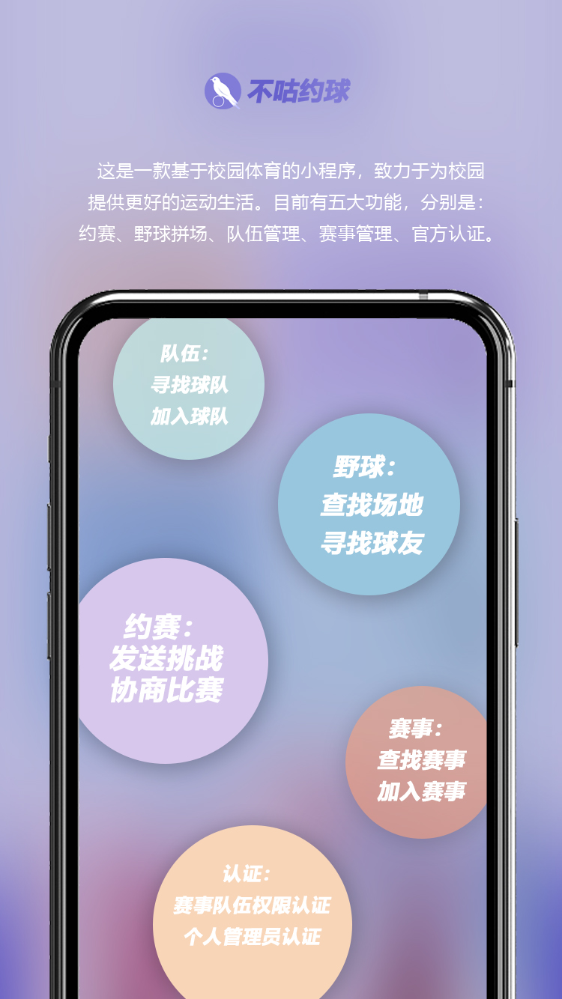
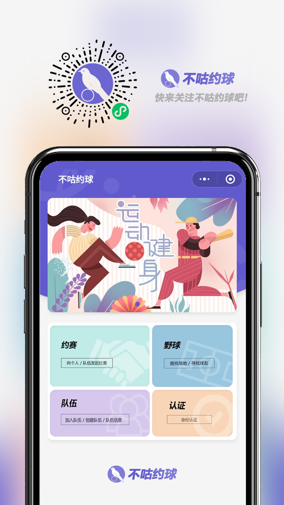

Some thoughts about this project.
2021.11.11
Official website: www.bugusport.com
Bugu Sport marked my inaugural venture into large-scale projects and my debut experience in orchestrating a project as a team leader.
In this blog, I would like to share insights into my journey through the development process,
the challenges I faced and how I effectively tackled them. If you're interested in delving deeper into the project,
please click the button below to access my GitHub repository for Bugu Sport.
Development process
 One day shortly after starting college, I indulged in Football Manager 2020, a game crafted by Sports Interactive. This simulation game offers players the chance to manage teams, engage in competitions, and track statistics. It was during this time that a spark of inspiration ignited within me: could I transpose this virtual gaming experience into the digital realm of campus life, thereby establishing a sports data service platform for our school? This notion became one of the founding inspirations behind Bugu Sport. Through this journey, I unearthed the boundless potential of programming, unveiling a newfound purpose and ambition within myself. No longer content with merely being a player or user, I aspired to become a creator and provider in the realm of technology.
To achieve this goal, in April, I started the development of Bugu Sport as a team leader.
Step 1: The first step was to recruit teammates. I sent invitations to two of my best friends from the same major who also loves soccer because I believe they are interested in combining sports and programming. That passion is essential for the development of the project. I also invited a friend majoring in design to ensure our user interface design was beautiful and reasonable. Finally, I built the team.
Step 2: The project development needed to determine the "direction," and I played the role of a "product manager," conducting product research on the needs of campus sports and collecting user surveys with my teammates for analysis and discussion.
Step 3: I refined the requirements and differentiated them by modules, and assigned each teammate to develop an independent module, such as the game invitation, street-ball organization, team management, and match management, strictly following the rule of high cohesion and low coupling.
Step 4: After each demand is developed, I will accept the pull request, conduct code review, and use the method of white-box testing to test the software.
However, things were not as smooth as expected. The school's 2020 Software Design Competition jury eliminated our work in the preliminary contest, dealing a significant blow to the team. For a period, we found ourselves grappling with self-doubt. As the team leader, I was determined not to capitulate easily. I endeavored to find solutions while offering support to my teammates. Through discussions with teachers and professors, I identified issues with our demand analysis and development processes and implemented necessary improvements. For instance, we expanded our scope by conducting more questionnaires to gather diverse feedback. We streamlined our focus on organizing and inviting events and teams, eliminating unnecessary demands. Additionally, we transitioned from the Waterfall Development model to the Agile Development approach and adopted stricter code specifications, such as the Google JavaScript Style Guide, thereby enhancing the readability and extensibility of our code.
Through continuous efforts, our program garnered increasing love from users. Eventually, in June 2020, we achieved a significant milestone by successfully advancing to the final 32 teams out of over 4000 participating teams nationwide.
Aside from the accolades, the entire development process proved to be the most rewarding aspect for us. I gleaned invaluable lessons throughout this journey. Beyond technical skills, I discovered the intricacies of delivering an exceptional product. Each night, my mind brimmed with countless ideas, reflecting the challenges inherent in crafting a remarkable offering. However, with each demand fulfilled, a profound sense of satisfaction washed over me, particularly witnessing users' growing fondness for sports and their ability to forge new connections through our application.
All in all, I continue to iterate on this app. I firmly believe there is still ample room for growth and exploration in the future, particularly in the realm of commercializing campus sports. In China, numerous opportunities exist for the commercialization of campus sports. Drawing inspiration from the NCAA league, I envision a platform for campus sports in China that offers students digital services, fostering a passion for sports and facilitating connections among sports enthusiasts.
If you share an interest in this project, please don't hesitate to reach out to me.